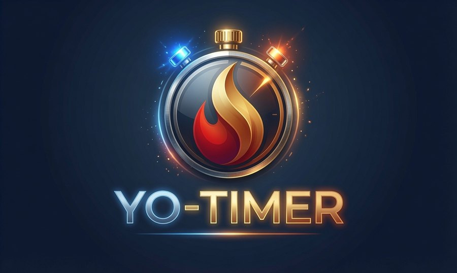
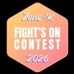

Coupure en cours
PAUSE
--:--
Reprise des heats au décompte
Merci à nos partenaires
Ils soutiennent le FOC 2026
K
FOC 2026
LIVE
Z1+Z2
← Z2
Z1 →
⛶ Grand écran
☀️ Fond blanc
🔆 Contraste
--:--:--
📢 MESSAGE LIVE


⏳ DÉBUT DE JOURNÉE
1:00
Préparation en cours…